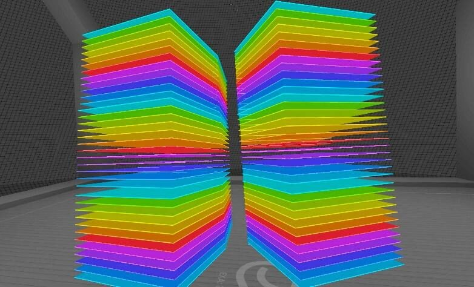
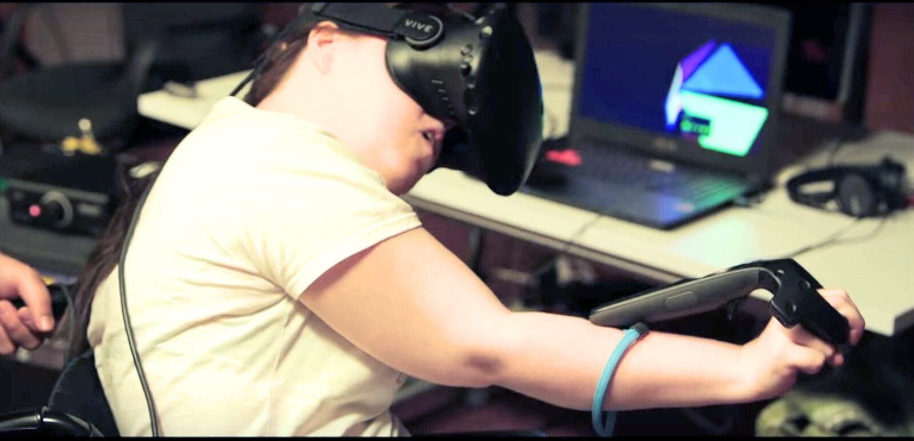
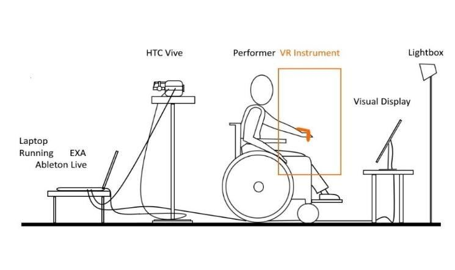
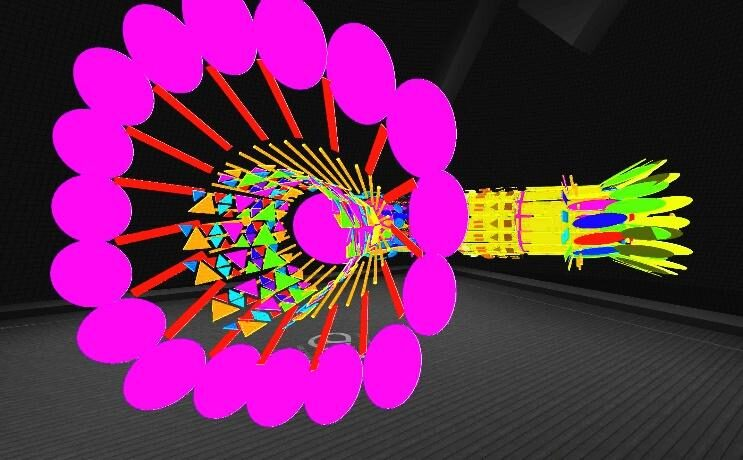
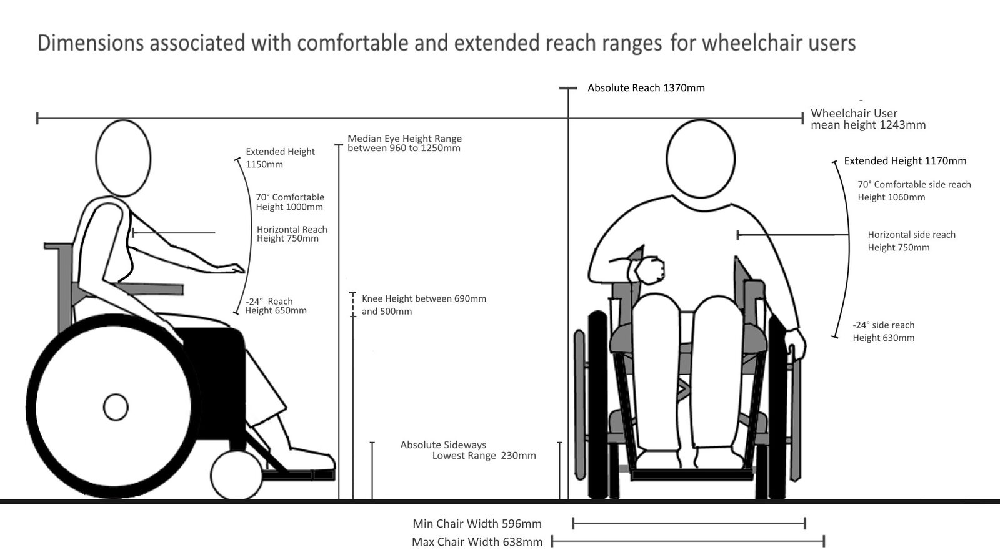

GIVME: Guided Interactions in Virtual Musical Environments:
ABSTRACT
The current generation of commercial hardware and software for virtual reality and immersive environments presents possibilities for a wealth of creative solutions for new musical expression and interaction. This paper explores the affordances of virtual musical environments with the disabled music-making community of Drake Music Project Northern Ireland. Recent collaborations have investigated strategies for Guided Interactions in Virtual Musical Environments (GIVME), a novel concept the authors introduce here.
This paper gives some background on disabled music-making with digital musical instruments before sharing recent research projects that facilitate disabled music performance in virtual reality immersive environments. We expand on the premise of GIVME as a potential guideline for musical interaction design for disabled musicians in VR, and take an explorative look at the possibilities and constraints for instrument design for disabled musicians as virtual worlds integrate ever more closely with the real.
Author Keywords
Inclusion, Accessibility, Disability, Virtual Reality Musical Instruments, GIVME, VRMI, Centred Control.
CCS Concepts
•Applied computing → Sound and music computing; Performing arts; •Human-centred computing → Accessibility; Accessibility systems and tools;
1. INTRODUCTION
1.1 Key concepts in adapting for accessible music making.
For many disabled musicians, music-making is often a facilitated process and the facilitator is key to engaging the disabled musician [1]. Such engagement may be done through interactive workshops that allow for expression of identity, communication, team work, mutual respect and skill sharing. This collaborative working process constitutes an example of ‘networked support’ - the symbiosis of music-maker and music support services - also known as the Dependency Model of disability music service access [2].
The principal author of this paper has 26 years of experience as a facilitator in community music-making, seeing first-hand the social and health benefits of musicking for inclusion and cultural expression. The engagement with music in special education and social care environments often address the need for musical expression and enjoyment. If the aim is to enthuse and engage participants, the level of interactivity can be tailored through bespoke applications designed for individual users, or products designed for broader user bases using techniques such as quantisation of musical pitches.
Whilst there is a well-documented demand for accessible music-making in order to attain reported therapeutic benefits, [3] for many there is also an exploratory drive to find creative solutions to meet specific individual needs through bespoke adaptation of musical instruments [4].
Or reasearch group Performance Without Barriers (PwB) aims to challenge dominant assumptions around creative performance practice through the development of accessible and enabling technologies. This is based on the idea that everyone has the right to make music. [5]. The ethos is to design with, rather than for disabled people, encapsulated in James Charlton’s slogan for the disability rights movement ‘Nothing About Us Without Us’[6].
1.2 A facilitated approach to music making.
Community music’s collaborative approach often prizes the process as much as the product. Since improvisatory approaches in music-making tend to suggest fluid and relational ways of being in each other’s company, our design approach uses music improvisation as a framework for addressing inclusion and diversity. By conceptualising improvisation as an inclusive act, our research group conceives of design process that lead to instruments created from the perspectives of the individual. Our design methods are processual, user-centred and collaborative, with improvisational attitudes embedded deeply within our approach; thus, the design spirit we adopt is closely informed by the methodologies stemming from the practice of music improvisation.
Digital musical instruments (DMI) afford great flexibility in community music practice, particularly for disabled musicians. Consumer music applications feature user-friendly interfaces with customisation options (display, scaled notes, quantising) presenting a wide variety of audio samples and synthesis and MIDI/OSC network capabilities. Accessible Digital Musical Instruments (ADMI) take these common aspects of the DMI and adopt a design approach tailored to the disabled musician’s individual physicality and cognition, as well as the musician’s capacity (and desire) to learn the instrument. A “Centred Control” design approach [7] may be adopted by an ADMI to prioritise the disabled person’s perspective and affordances in control of their environment. Not just the elements of note value, octave range, key and scale, MIDI channels and modulations associated with digital musical instruments, but also the meta-functions of the instrument, can be designed. Examples of meta-function include instrument type, instrument size, number of interactive elements within the instrument, orientation and distances of those elements from each other, the colour or opacity of objects, the accessibility of the control surface and external switches, interfaces, wearables and assistive technology that can enable a particular user to interact with an DMI.
VR has become a new frontier for exploring Virtual Reality Musical Instruments (VRMI) and DMIs are now being designed for (and within) the Virtual Environment. Other terms used include Virtual Instruments for Musical Expressions (VIMEs)[8] or Immersive Virtual Musical Instruments (IVMI)[9] and can range from the simple, quantised musical interactions to more complex examples such as bespoke modular synthesis [10]and VR Digital Audio Workstation solutions 1 2 3. It is worth noting that, from a comprehensive review of over 199 works and 260 papers published in the past decade, no paper directly addressed accessibility within virtual reality or extended reality musical instruments. [11]
1.3 Expanding Centred Control.
Building on the ideas of Centred Control in Digital Musical Instruments and applying these to the emergent practice of Virtual Reality Musical Instruments, we propose Guided Interactions in Virtual Musical Environments (GIVME). GIVME is a potential framework for accessible design in VR with a focus on end-user customisation within the parameters of the user’s desires, abilities and physical preferences. The flexible design of virtual game objects within the virtual environment can be orientated towards optimising the process of instrument design for a disabled user. The boundaries of centred control in VRMI can be divided into two areas. The first is the area of direct effect. This is the region of interaction objects within reach of the musician. These include selection of gestures, modulation gestures and excitation gestures. [12]. It may also include distant objects activated through raycasting 4 that are initialised in the area of direct effect, or using external switches, controllers, keystrokes or triggers.
Guided interactions depend on selection gestures designed to determine the nature of modulation and excitation gestures. The second is the area of indirect effect. These are secondary objects outside the close-by, user control zone but are effected by the user using automated and generative processes within the environment or externally through facilitated support [13]. The enablement of interaction between the direct and indirect areas depends on the affordances of the initial guided interactions.
Indirect effects initiated by centred control may include processes that continue beyond the initial note excitation that involve quantising sounds, arpeggiators and audio/midi effects that are not evident until after the initial and deliberate interaction is made. This is part of the explorative, playful and complexity inducing processes that engages all musicians during sound synthesis with DMIs. Such generated or looped effects can be visualised in VR, for example the gravity-based sequencer “Drops, Rhythm Garden” on the Oculus Rift 5. When designing an instrument, GIVME can be used to expand options on how to manipulate the vast customisable attributes instruments in a controlled yet playful environment.
Designers and musicians are now open to exploring virtual environments as tools for accessible musical instrument design. Disabilities come in many forms exhibited in both physical and learning disabilities. VRMI design presents a range of possible interactions in enabling physical affordances. Optimal interactions in VRMI systems that reportedly create a ‘flow state’ amongst users have been observed as sharing similar characteristics: clear goals, unambiguous performance feedback, a balance of challenge and ability, where action and awareness merge, in total concentration with real sense of control where self-consciousness disappears as well as a sense of time [14]. Those characteristics of VRMI such as goals, feedback and sense of control are of great importance to the disabled musician. When designing an inclusive VRMI, a Centred Control approach requires that the person should understand the interactions needed and have the ability to control the instrument interactions to suit their needs. This encourages discretionary choice, autonomy, strategic planning and game management [7]. Good design in GIVME would include facilitation of this control state to allow access to the flow state. We will return to set out a framework for GIVME later, now we will look at a project that gave rise to our ideas around the potential for GIVME.
2. PURSUING PERFORMANCE WITHOUT BARRIERS
2.1 Designing an accessible VRMI in EXA
In 2018, our research team Performance Without Barriers worked with musicians from Drake Music Project Northern Ireland 6, collaborating with Spanish based artist collective and immersive content designers BeAnotherLab 7, and Belfast-based contemporary music ensemble Hard Rain Ensemble Soloist Ensemble 8. Together we created a project entitled “Inclusive Immerse Technologies” 9. The aim of this project was to explore the affordances of immersive technologies in creating inclusive VRMIs and to facilitate collaborative music making processes with people with different abilties.
The research consisted of five thinking and design workshops where immersive technologies were explored to their musical and access potential for the use by disabled musicians. These were followed by a public event to demonstrate a developed VRMI in a live performance at the Sonic Lab, Sonic Arts Research Centre.10
Performance Without Barriers were initially contacted by Zach Kinstner, developer of EXA The Infinite Instrument. 11 EXA allows for customisation and targeted spatial placement of virtual objects triggering sound libraries or MIDI data. PwB accessed the EXA software on a VR compatible laptop 12 with the HTC Vive Pro VR headset and controllers.13
The key participant from Drake Music Project Northern Ireland for whom the accessible virtual musical instrument was designed is musician Mary Louise (ML) who lives with quadriplegic cerebral palsy, a condition that effects motor control of upper and lower limbs.
The principle author set out to define the number, shape, position and size of interactable sound-triggering virtual objects that could occupy the virtual control space between the measured extremes of ML’s arm movement. Through iterative tests and collaborative working processes, the accuracy of ML’s fine motor control was gauged, which can change from day-to-day. The best configuration of the desired size, quantity, density and orientation of musical triggers was agreed. This led to the creation of W40cm x H1cm x L40cm objects stacked in vertical arrays with 4cm spacing to allow for ML’s natural movements and spasms in her limbs that can occur in random moments due to the nature of ML’s disability . By accessing the JSON file 14 of the instrument within EXA’s directories and adjusting the XYZ co-ordinates, the instrument could be aligned accurately in EXA. Responding to ML’s ability to use two hand controllers independently, PwB created two instruments, one placed either side of ML’s point of view within the virtual environment (Fig. 1). ML was able to manipulate the instrument lifting arms up and down with a wide excitation area to facilitate imprecisions in movements while interacting with an instrument she could feel, but not directly see.


Fig 1: The view of the VRMI from the performer’s perspective
Informing the choice of sounds triggered by game objects in the VRMI stemmed from the collaborative working processes with musicians from the Hard Rain Ensemble. The musical ideas that emerged though previous improvisation exercises were connected and implemented in the virtual instrument. The virtual sound triggers in EXA would be treated as melodic notes placed. Each note value was designed with a corresponding colour within each of the 3 available octaves. ML chose the sounds for the virtual instruments from the Ableton Live Suite database of instruments, a different virtual instrument in each hand at any time, customised to achieve a desirable sound and to take advantage of spatial audio capabilities of the 48-channel loudspeaker array in the Sonic Lab. Triggered MIDI data was sent to Ableton Live 10 15 via a separate virtual MIDI router software LoopMidi. 16 where EXA can bus MIDI data through 4 virtual instruments with 16 channels in each to an external digital audio workstation.
We made the decision to present within EXA note values in a chromatic scale. It was not possible to quickly change instrument note values within the environment that Mary Louise occupied, this was done with the Ableton Live “Scale” MIDI Effect. This did lead to visual, haptic and audio disparity when MIDI notes within EXA had no corresponding value within Ableton Live and therefore no associated audio output. This conflicts with one of the founding design principles in VR musical instruments theory [15] in that any visual excitation should correlate with timely audio response. A possible GIVME applied for ML would be to directly effect the control state of an instrument within a user interface or indirectly effect the an instrument’s properties though a facilitated process using a linked computer or tablet.
2.2 Wearable hardware considerations
The hand controllers of the HTC Vive afforded useful haptic feedback for activity within the virtual environment and were set to signal pulsing when activated by ML.
Due to ML’s limited grip control, the Vive’s controllers were looped over the back of the ML’s hands, rather than held as originally designed by HTC Vive. Whilst stabilising grip, this solution allowed for more accidental pressing of buttons, and occasionally led to disabling of the system when the device’s global user interface was unintentionally activated. Another guided interaction was to create a ‘safe spot’ close to the performer’s torso where no triggers were placed, meaning no sounds could be activated in that spot. This position (both arms close to ML’s chest while holding the arms still) became ML’s adopted signal to the performance group that ML had stopped playing her instrument.


Fig 2: Mary Louise trying EXA for the first time.
During initial play testing with an ensemble ML was wearing the VR headset. The team noticed that the headset was occluding essential cues, typically involved in communicative interactions, such as eye contact or facial expression. This was of particular importance in two ways: 1. ML, is less verbal, so eye and facial expression are paramount in communication for her; and 2. ML was performing with a non-sighted musician and her desire was not to ‘see’ or project her vision to the audience, as she felt that her blind collaborator would be even more excluded in that way. Issues of visual representation in VR instruments led to many basic but highly essential questions for the research team. What is the performer seeing inside her headset? What is she not seeing whilst being inside the headset? What are the other musicians seeing? What might the audience see?
2.3 An ‘invisible instrument’ approach
In an attempt to explore these questions further, PwB were influenced by the interaction technique of the Soundbeam, what one might call an ‘invisible instrument’ - the user interface invisible to both musicians and audience. The Soundbeam 17 is a sonar-based receiver that produces MIDI data dependent on the distance from the device’s emitter to the point at which the sonar beam is intersected. The space in front of the Soundbeam can be mapped to accommodate the mobility of a particular user. Typically, this space is divided into intervals of musical notes. The musician usually learns, through practice, how their movement is mapped to sound in relation to the emitter and how best to trigger the desired sounds. PwB followed up with an alternative approach to VRMI using this same process; where the possibilities of an ‘invisible instrument’ were explored. When the VR headset was not being worn, the team noted the EXA could remain active, and it would behave similarly to the Soundbeam, providing a physical space in which the musician’s movements could be mapped to sound. In addition, as the HTC Vive hand controllers could provide haptic feedback, the visual feedback shown in the VR could be displayed on an external computer monitor, removing the need for the performer to be “inside the headset”.
Therefore, PwB constructed the space in which the performer was positioned in relation to the HTC Vive headset, to an external visual display monitor, and the lightboxes (Fig. 3). The VR headset was placed at head height behind ML with two lightbox IR receivers positioned in front in order to sense physical movement. This afforded sighted and facial interaction with other musicians on stage, while a visual display monitor mirrored the view inside the performer’s headset therefore providing a visual reference of avatars and instrument interactions to ML and to the audience.


Fig 3: PwB Invisible VR Invisible Instrument Setup. Illustration: Mills 2018.
To expand possible interactions for the performer, a further interactive instrument was designed in addition to the two stacks of virtual objects. This 'Gramophone’ VE (Fig.4) is a virtual sculpture of sound-triggering objects arranged as a horn. The VE sculpture was designed to accommodate the quarter-circle circumference of the 5-metre tethered headset to the computer optimally positioned for a wheelchair user. Each coloured geometric object is interactable. To exercise the principle of guided interactions, the tunnel of VGOs were all placed within reach of ML until she exits the end (mouth) of the ‘Gramophone’. By wearing the headset, the audience could see instruments being played from ML’s perspective. Stage markings helped facilitate movement through the instrument for the facilitator and to guide ML to her place in the ensemble.


Fig 4: The “Gramophone” walk-through VRMI, PwB. DM 2018
2.4 Analysing the accessible VR performance process
The work of Serafin et al [16] highlights aspects of an effective VRMI. The first indicator Serafin stresses is sound mapping, that sound is perceived with certainty as emanating from a particular virtual game object. EXA exports to an external DAW based on quick and accurate bespoke positioning of triggers customised to the end user and behaviour predicting algorithms to reduce latency. Serafin also identifies the need for smooth latent free interactions, a need to make use of existing skills, to play with both natural and magical interactions, display ergonomics, creating a sense of presence and a sense of body ownership without cybersickness [17]. They also mention the sociable nature of interactions which our team understood as the communication of communal musicking. This was the overriding factor in our final interaction design with ML. The hardware used allowed for real-time manipulation to play with the ambisonic sound space without undue latency, and the haptic feedback from the two Vive controllers heightened the sense of presence for the performer. The instruments were designed to incorporate large margins of error because of the lack of visibility between ML and her instrument. Complexity was later introduced in post-performance playtime in the Drake Music Project Northern Ireland studio by creating thinner stacks of W40cm x H1cm x L15cm and duplicating them to beside by side presenting them on additional MIDI channels. Channels placed further away from the user had more of effects applied so adding accessible expression to the original instrument.
3. GIVME: Guided Interactions in Virtual Musical Environments.
3.1 The potential of GIVME.
GIVME proposes a design ethos for accessible VRMIs which affords choices about the nature and function within the VR instrument. It includes developing for a variety of potential interactions so a musician may choose a style optimal for them. Interactions may include hand movements, ray triggers, eye gaze movement or object orientated interaction; employing a variety of these brings great potential in addressing accessibility.
A user interface function exists in EXA that allows for the changing of keys and scales, and all triggers are customisable; however, once set to a note, these cannot be changed without a sequence of controller button presses and hovering over user interfaces within a tightly designed menu system. The desirability of external interaction is highlighted by Alice Wong’s research [18] into the use of VR by disabled users. This included the desire to design interaction parameters on an external tablet or accessible computer prior to immersion. When MIDI note values are customisable internally in an application then all virtual notes have a corresponding sound, unlike in PwB’s demonstration, where the note values were ultimately determined after export from the game environment.
In the freely available game design engine Unity 18 where EXA was created, VRMI design requires technical knowledge and time to create new instruments. This knowledge base will continue to expand and develop. It is a good time to be aware of GIVME and include it as part of user experience design. GIVME may extend to the use of “hyper instruments” where the VR overlays on top of an existing ADMI and can add extra functionality with non-invasive sensing [19].
Mentioned earlier was the Soundbeam, a non-tactile, frictionless, customisable sonar-based instrument needing a user to learn how to create meaningful interactions. Similar processes are involved in playing the Theremin. Two metal antennas sense the relative position of a user’s hand, one hand guides the volume of note, the other, pitch. It is a difficult instrument to master. A good example of a GIVME addresses the problem of where the notes on a Theremin are. The solution was to augment the Theremin in mobile VR with 3D visual cues or ‘signifiers’. [20].
To assist in playing the ‘invisible’ instrument a VR ‘signifier’ introduced a relationship between hand movement and sound. The term signifier refers to “any mark or sound, any perceivable indicator that communicates appropriate behaviour to a person” [21]. In a VRMI context it could be any deliberately placed virtual or external object that marks a spatial interaction. ML needed a physical marking for where to place her wheelchair in the performance area. To a sighted musician, the flexible and accurate nature of interactions with invisible note positions can be guided using physical parameters such as the hardware of the Soundbeam and the Theremin or else it is done through audio cues only.
3.2 A GIVME checklist
VRMIs are uniquely placed to employ creative and enabling audio-visual relationships. As Jean Michel Basquiat is attributed to have said, “Art is how we decorate space, music is how we decorate time”. VRMIs are in an interesting position to exploit this sentiment. In addition to the basic principles of VRMI design, we can apply Alice Wong’s previously mentioned research to address accessibility in future VRMIs. These may be along the lines of a design framework that:
· Engages with disabled musicians from the start.
· Applies universal principles of environment and interaction customisation in developing for the widest variety of individual differences.
· Designs for the seated position. Accommodates variable ranges of motion. Considers fatigue and allows customisation of virtual placement of virtual objects. Considers balance issues and the need to avoid excessive rotating or bending upper body.
· Avoids or limits spatial translations of player characters with preferably static or at very most, rail (linear) movement. Avoids cybersickness, motion sickness and vertigo. Allows for easy re-centering to preferences.
· Includes options for quantising and equalising music effects. Includes alternative options for velocity or force-based interactions.
· Includes lots of interaction methods. Designs with options for internal or plug-in external interfaces. Allows for one-handed interfacing. Includes alternative input methods if appropriate. Gestural control should allow for greater margins of error and false positives.
· Creates flexible user interfaces for visual impairments. Allows for interface customisation or magnification. Avoids tracking text or occluding text. Avoids near focal distance occlusion. Develops for colour blindness through textual and shape signifiers.
· Includes responsive and accurate haptic feedback through controllers or other paired wearable devices. Considers customisable inputs. Allows for simple interactions over complex controls.
· Includes options for the hearing impaired. Includes option for mono output. Considers audio to text readers. Considers additional routing options for discrete assistive audio or visual information.
· Avoids cognitive and sensory load with too many interactions at once. Designs for light sensitivity, dazzle sensitivity and focus loss.
. Accommodates varying levels of dexterity and reflexes.
3.3 An example of measurements in GIVME
When designing for DMI it is good practice to measure for ‘comfortable’ interactions, though ‘extreme’ interactions can be useful. The comfortable interaction will contain the interactions dependent on a prolonged performance. The extreme measurements can be aspirational to access and useful for therapeutic applications. Figure 5 denotes the range of movement suitable for comfortable frontal and side movement for the median 90% of wheelchair users. Individual differences in wheelchair build dimension should be taken into account. Electric scooters for example, should incorporate +180mm into the height calculations 19. Good GIVME design would include options for adjustments in height and width placement.


Fig 5: Wheelchair reach dimensions. Illustration: Mills 2021
3.4 NEXT STEPS FOR INCLUSIVE VRMI
Untethered 6DOF and Hand Recognition
Until now, accessible immersive music research has focused on hand control and gestural recognition with the Kinect camera [22] and Leap Motion controller. [13]. To develop possible affordances our Performance Without Barriers team is looking at augmenting approaches previously demonstrated in EXA, using the game design engine Unity and the Oculus Quest 2 headset 20 that affords untethered six-degrees-of-freedom (6DOF). The downside of this set up is limited camera angles requiring head and hand co-ordination, which in turn is likely to cause design decisions when working with a musician with limited head movement control. Untethered 6DOF has possible new affordances in mobility. The acceptable latencies in music making using Bluetooth 5.0 and WIFI 6 transference of MIDI and OSC show potential for performance use [23]. The more discrete the interface, the likely-hood of adoption by users 21 and for PwB, more affordances for performing VRMIs in ensembles.
In playing our virtual instrument, ML had to practice with the HTC Vive controllers and the position of the VRMI. The controllers were clumsy, and it is likely that ML could have better affordances with gestural control but less immersion with a loss of haptic feedback. “Expression in musical practice is inextricably tied to the touch of the performer” [24] To synthesise touch response, the appropriate GIVME would be to apply haptic feedback-based solutions like the Hapring. [25]. There is a difficulty registering spasticity in hands, causing issues in recognising kinematic chains that hold interactive nodes together in hand recognition software. Spasticity is an elastic condition and the stretch reflex is dependent on temperature, emotions, fatigue and is often milder at rest. It occurs in people with Cerebral Palsy, stroke, brain injury, trauma, anorexia, post neuro-surgery, spinal cord injury, multiple sclerosis and other neurological diseases 22. A possible application for GIVME would be a user interface option to determine what part of the hand to use as a trigger. This solution targets the “GetFingerConfidence” method 23, that the camera and software employ to recognise hand shapes. The aim is to minimise the effects spasticity have on finger occlusion in the skeletal or kinematic chain. Interactions in the Oculus Quest 2 recognise the pinch movements 24 and the Magic leap headset recognises eight discrete ‘key poses’ 25. GIVMEs also may suggest applying creative and accessible alternatives for discrete hand shape interactions such as the DOTS system that uses inertial measurement unit sensors. 26 . Virtual reality hardware is reducing in cost and associated development software is free to download and learn. Advancing creative and inclusive interactions will become more popular. It might become a hot topic for exploring within open source systems.
CONCLUSIONS
Our study showed new affordances in VRMI while also highlighting new obstacles for the inclusive ensemble. In two years since the original process and showcase performance in 2018, immersive technology has developed its own new affordances. We propose the concept of GIVME as a flexible ethos for future design processes in accessible VRMI. As wearable haptic interfaces improve, and with the technological shift to extended reality, the potential for new GIVMEs will emerge. It is an ongoing and expansive process applying the practical ideals of Centred Control to music making environments. VRMIs designed with a GIVME approach may become more intuitive for the user and adaptive to their needs and their environment.
Immersive technologies and extended realities promise to bring new affordances to a section of society who see great potential. If these are to be real tools for interactions and Centred Control, usable by disabled musicians, facilitators and developers, disabled people and their considerations will need to be at the front and centre of the design process to optimise accessibility and inclusion, and as an extension, to find new expressions creating music using well designed instruments.
Acknowledgments
Performance Without Barriers would like to acknowledge the tireless efforts of the musicians and staff of Drake Music Northern Ireland. Their dedication to explorative and innovative music making combined with infinite patience with facilitators and researchers have afforded many new interactions and fun ways of playing music together.
Performance Without Barriers would also like to acknowledge the Department for the Economy Northern Ireland for their Collaborative Studentship Award (CAST) making this research possible.
Footnotes
Virtuoso. (2020) Published by Oculus, Facebook.
↩
https://www.oculus.com/experiences/quest/3640910976022132/},Virtual Reality Nuendo. (2020) Published by Steinberg.
↩
https://new.steinberg.net/nuendo/virtual-reality/- ↩
A raycast sends an imaginary “laser beam” along the ray from its origin until it hits a collider in the scene.
↩
https://docs.unity3d.com/Manual/CameraRays.htmlDrops, Rhythm Garden (2018). Published by Planeta.
↩
https://www.oculus.com/experiences/rift/1990542257627879/?locale=en_GB- ↩
BeAnotherLab: http://beanotherlab.org/
↩- ↩
- ↩
- ↩
https://store.steampowered.com/app/606920/EXA_The_Infinite_Instrument/
↩PC Specialist i7-8750 CPU, 32GB RAM and GTX1070 Graphics Card),
↩
8 Channel Sound Card (Motu Ultralite Mk3)- ↩
JSON files location: Documents/EXA-VR/User/Layouts
↩- ↩
- ↩
- ↩
- ↩
https://www.gov.uk/government/publications/inclusive-mobility/inclusive-mobility
↩- ↩
https://arinsider.co/2020/07/15/is-wearability-the-next-mobility/
↩What is Spasticity?
↩
https://spastic-hand.com/index.php/en/spasticityhttps://developer.oculus.com/documentation/unity/unity-handtracking/
↩- ↩
https://developer.magicleap.com/en-us/learn/guides/lumin-sdk-handtracking
↩- ↩
Citations
- ↩Samuels, K. (2019). The Drake Music Project Northern Ireland: Providing Access to Music Technology for Individuals with Unique Abilities. Social Inclusion, 7(1), 152–163.
- ↩Lucas, A. (n.d.). The Longevity of Bespoke Accessible Music Technology. In NIME’20.
- ↩Partesotti, E., Peñalba, A., & Manzolli, J. (2018). Digital instruments and their uses in music therapy. Nordic Journal of Music Therapy, 27(5), 399–418.
- ↩Frid, E. (2019). Accessible Digital Musical Instruments—A Review of Musical Interfaces in Inclusive Music Practice. Multimodal Technologies and Interaction, 3(3), 57.
- ↩Veblen, K. O. (2001). Community Music: Towards an International Overview. In R. J. Colwell (Ed.), The New Handbook of Research on Music Teaching and Learning. Oxford University Press.
- ↩Charlton, J. I. (1998). Nothing About Us Without Us: Disability Oppression and Empowerment. University of California: University of California Press.
- ↩Moser, I. (2006). Disability and the promises of technology: Technology, subjectivity and embodiment within an order of the normal. Information, Communication & Society, 9:3, 373–395.
- ↩Turchet, L., Hamilton, R., & Camci, A. (2021). Music in Extended Realities. IEEE Access, 9, 15810–15832.
- ↩Berthaut, F., Zappi, V., & Mazzanti, D. (n.d.). Scenography of immersive virtual musical instruments. In 2014 IEEE VR Workshop: Sonic Interaction in Virtual Environments (SIVE). IEEE.
- ↩Wakefield, A., G. ,. Palumbo, M. ,. Zonta. (n.d.). Affordances and Constraints of Modular Synthesis in Virtual Reality. In NIME’20. Retrieved from https://www.nime.org/proceedings/2020/nime2020_paper106.pdf
- ↩Turchet, L., Hamilton, R., & Camci, A. (2021). Music in Extended Realities. IEEE Access, 9, 15810–15832.
- ↩Berthaut, F., Desainte-Catherine, M., & Hachet, M. (2011). Interacting with 3D Reactive Widgets for Musical Performance. Journal of New Music Research, 40(3), 253–263. Retrieved from https://hal.archives-ouvertes.fr/hal-00633750/file/11jnmr.pdf
- ↩A. Dickens, C. G., & Koleva, B. (2018). Facilitating Accessibility in Performance: Participatory Design for Digital Musical Instruments. J. Audio Eng, 66(4), 211–219. Retrieved from https://www.aes.org/e-lib/browse.cfm?elib=19387
- ↩Deacon, T., Stockman, T., & Barthet, M. (2017). User Experience in an Interactive Music Virtual Reality System: An Exploratory Study. In Bridging People and Sound (pp. 192–216). Springer International Publishing. Retrieved from https://qmro.qmul.ac.uk/xmlui/bitstream/123456789/31978/1/Barthet%20User%20experience%20in%202017%20Accepted.pdf
- ↩Serafin, S., Erkut, C., Kojs, J., Nordahl, R., & Nilsson, N. C. (n.d.). Virtual reality musical instruments. In Proceedings of the Audio Mostly 2016. ACM.
- ↩Serafin, S., Geronazzo, M., Erkut, C., Nilsson, N. C., & Nordahl, R. (2018). Sonic Interactions in Virtual Reality: State of the Art, Current Challenges, and Future Directions. IEEE Computer Graphics and Applications, 38(2), 31–43.
- ↩Weech, S., Kenny, S., & Barnett-Cowan, M. (2019). Presence and Cybersickness in Virtual Reality Are Negatively Related: A Review. Frontiers in Psychology, 10. Retrieved from https://doi.org/10.3389/fpsyg.2019.00158
- ↩Wong, Peck. B., A. ,. Gillis, H. (2017). VR AccessibilitySurvey for People with Disabilities. Retrieved from https://drive.google.com/file/d/0B0VwTVwReMqLMFIzdzVVaVdaTFk/view
- ↩Shawn Trail, M. O. (n.d.). Non-invasive sensing and gesture control for pitched percussion hyper-instruments using the Kinect. In NIME’12.
- ↩Johnson, G., D. ,. Damian, D. ,. Tsanetakis. (n.d.). VRMin: Using Mixed Reality to Augment the Theramin for Musical Tutoring. In NIME’17.
- ↩Norman, D. (2013). The Design of Everyday Things. Basic Books.
- ↩Graham-Knight, K., & Tzanetakis, G. (n.d.). Adaptive music technology using the Kinect. In Proceedings of the 8th ACM International Conference on PErvasive Technologies Related to Assistive Environments. ACM.
- ↩Wang, M. M., J. ,. Mulder, A. ,. Wanderley. (n.d.). Practical Considerations for MIDI over Bluetooth Low Energy as a Wireless Interface. In M. Queiroz & A. X. Sedó (Eds.), NIME’19.
- ↩Jack, R. H., Stockman, T., & Mcpherson, A. (n.d.). Maintaining and Constraining Performer Touch in the Design of Digital Musical Instruments. In Proceedings of the Eleventh International Conference on Tangible, Embedded, and Embodied Interaction. ACM.
- ↩Ariza, O. et al. (2015). Hapring: A Wearable Haptic Device for 3D Interaction. Mensch Und Computer, 421–424.